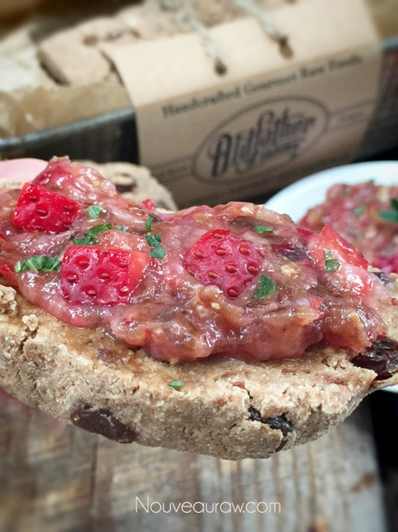

Raisin Bread
Warm raisin bread right out of the dehydrator, is there much better than that? I remember back when I first started eating a plant-based diet. I went 100% raw overnight.
Each day that had passed, I read and read and read, gathering as much information as I could about it. I started by just eating all fresh produce and some nuts. It wasn’t until I was at least 4-6 months into it that I got my first dehydrator. I remember telling my husband that I missed one aspect of cooking, and that was the comforting aromas that would swirl around the house when I cooked.
Without a dehydrator, a person doesn’t get to experience that sensation, well, that is if you stop cooking. BUT after I got the dehydrator and taught myself how to make crackers/breads and also to use it as a warming tool, my house was soon again filled with wonderful smells of comforting foods. This recipe for the raisin bread had my nose dancing all day.
I want to quickly touch base on a few ingredients that I commonly use in raw bread and cake recipes.
Almond Pulp
Every batch of pulp will differ in moisture based on how much of the milk you can squeeze from the nut bag. Therefore, you may need to adjust the amount of liquids being used in recipes calling for nut pulp. If it has a really dry feeling, more moisture can be added. Or if the pulp is wet, less moisture would probably be necessary.
It is also best to make sure that the pulp is unflavored, and that is a step that has to be taken when first making almond milk. There is a link below that you can click on to learn more about this process if you are unfamiliar with it. BUT should your pulp already have small hints of sweetness to it, not to worry… I doubt it would be enough to affect the outcome of this recipe. I don’t recommend any substitutions for the almond pulp. It is the key ingredient that helped me to create a light and airy batter.
Irish Moss Gel or Kelp Paste
It is a must that I touch base on this ingredient because it pops up every so often. The main question, “Do I have to use it, or what can I use instead?” Anything is possible when it comes to subbing ingredients. But I spend a lot of time developing recipes that have great flavor, texture, and appearance. Since many people have a hard time finding Irish moss (unless mail-ordered), I came up with the idea of creating a paste from raw kelp noodles. I can now happily report that both worked perfectly. The purpose behind these pastes/gels is to give some added nutrition but as equally important… the bread-like texture. If you are dead-set against using these ingredients, my next go-to would be a few tablespoons of psyllium husks. Have fun experimenting, but I highly recommend making the recipe that I designed first.
Preparation:
- In a food processor, fitted with the “S” blade, combine the oat flour, flax, coconut flour, cinnamon, and salt. Pulse till mixed.
- Add almond pulp, Irish moss or kelp paste, yacon syrup, date paste, maple syrup, and lemon juice. Blend till everything is well incorporated.
- Depending on how moist your almond pulp is, you may need to add water, so the dough sticks together nicely. Add 1 Tbsp at a time until the right consistency is reached.
- Instead of yacon syrup, you can use; raw coconut nectar, or raw honey.
- Pulse the raisins in or mix in by hand.
- Remove the batter and shape it into the desired size. Score the top with a knife. I later use these score marks as a guide in slicing my pieces.
- Place the bread loaf on the mesh sheet that comes with the dehydrator and dehydrate at 145 degrees for 1 hour to create a crust on the outside.
- After 1 hour, remove from the dehydrator and cut the bread slices to the desired thickness. I did mine at about 1″ thick.
- Return to the mesh sheet laying the pieces flat.
- Decrease the temperature to 115 degrees (F) and continue to dehydrate for 4+ hours.
- As an indicator, if it is dry enough, touch the center of the bread slices. You don’t want it to be doughy, but you also don’t want the bread to dry out too much.
- The dry time can be affected by the thickness of the bread, the humidity in the climate in which you live, and the make of the dehydrator.
- Shelf life and storage: Store the bread in an air-tight container, in the fridge, for 3-5 days.
- The more moisture that is left in your bread, the shorter the shelf life. Therefore, shelf life will vary with your drying technique.
- Whenever I make this bread, it never lasts very long enough to spoil.
- Keep in mind, the whole purpose of eating a raw diet is to eat foods at their peak of freshness, so don’t expect this bread to have an extended expiration date.
- This bread also freezes very well. Wrap each piece in plastic wrap, then place in a freezer Zip-lock bag. If well protected, it should keep for up to 3 months.
The Institute of Culinary Ingredients™
- To learn more about maple syrup by clicking (here).
- To learn more about Yacon syrup by clicking (here).
- Learn about the beautiful characteristics of Raw Coconut Nectar (here).
- Dates are a fantastic ingredient for raw food recipes, click (here) to read why.
- Why do I specify Ceylon cinnamon? Click (here) to learn why.
- What is Himalayan pink salt, and does it matter? Click (here) to read more about it.
- Are oats gluten-free? Yes, read more about that (here).
- Are oats raw? Yes, they can be found. Click (here) to learn more.
- Do I need to soak and dehydrate oats? Not required but recommended. Click (here) to see why.
- Learn how to grind your own flaxseeds for ultimate freshness and nutrition. Click (here).
Culinary Explanations:
- Why do I start the dehydrator at 145 degrees (F)? Click (here) to learn the reason behind this.
- When working with fresh ingredients, it is essential to taste test as you build a recipe. Learn why (here).
- Don’t own a dehydrator? Learn how to use your oven (here). I do, however, honestly believe that it is a worthwhile investment. Click (here) to learn what I use.
Topped with my Raw Strawberry Date Jam

© AmieSue.com